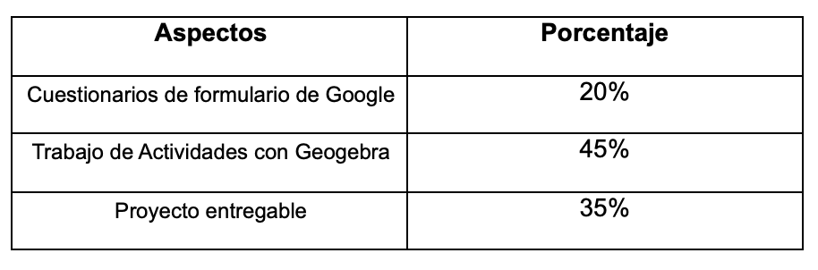

CEVV
Centro Educativo Valles Virtual
Taller
"Integración efectiva de la tecnología en el aula"
Introducción
Hoy en día, las nuevas tecnologías de la educación se han convertido en una herramienta para fortalecer la enseñanza y el aprendizaje, aumentar las oportunidades para acceder al conocimiento, desarrollar habilidades colaborativas o inculcar valores, entre otros. Además de que el uso de materiales y recursos en el aula por lo general despierta el interés y la motivación de los escolares, es fundamental que el profesor analice con detalle el modo en el que se emplearán y la función que pueden desempeñar para fomentar el aprendizaje.
Objetivo
Lograr que el docente domine y desarrolle habilidades metodológicas y tecnológicas que le permitan favorecer en sus alumnos los procesos de aprendizaje. Además el docente dominará las funciones básicas del software Geogebra y logre desarrollar una actividad que pueda incluir en alguna planeación de su clase.
Desarrollo del taller
El taller se desarrollará de manera virtual y se completará una vez que se haya cumplido con las actividades a realizar en cada caso. Teniendo la inteción que el docente logre desarrollar competencias tecnológicas que le favorezcan en su labor docente.
Evaluación
Para la evaluación se tomará en cuenta los siguientes criterios:
"Comencemos"